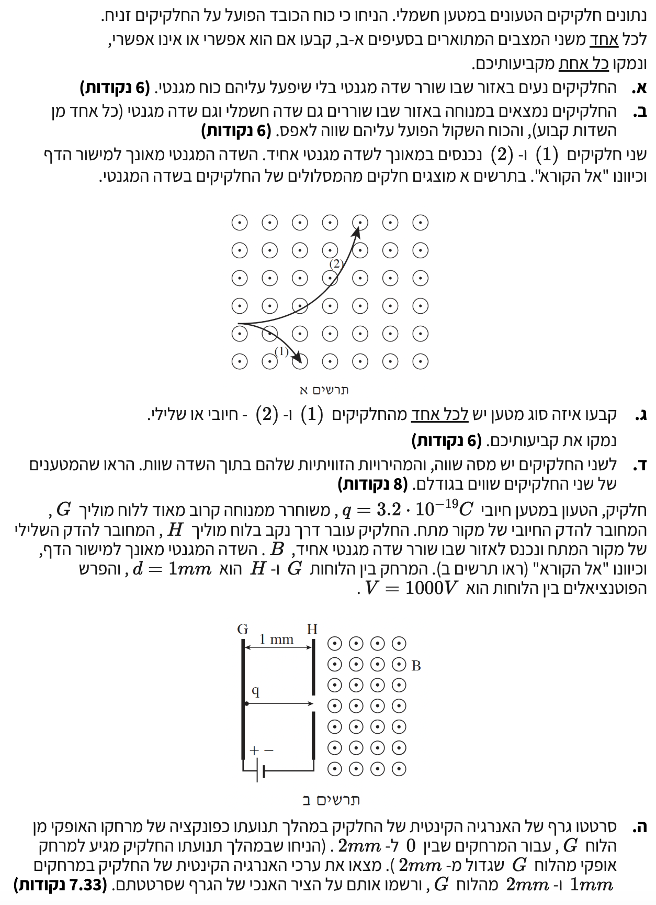

פתרון בגרות בפיזיקה: חשמל 2007
פיזיקה 5 יח"ל | שאלה 4
פתרון מודרך, מוסבר צעד-אחר-צעד הכולל תרשימי כוחות.
עודכן:
--- --:--:--
מבט כללי על השאלה
בשאלה זו אנו מנתחים תנועה של חלקיקים טעונים בתוך שדות חשמליים ומגנטיים. השהאלה מתחילה בשאלות קונספטואליות על השפעת שדה מגנטי וחשמלי על חלקיק עומד או נע, וממשיכה בניתוח דינמי של תנועה מעגלית בשדה מגנטי אחיד.
לכל אורך הדרך ניעזר בחוק השני של ניוטון, בנוסחאות כוח לורנץ ובכלל יד ימין למציאת כיוונים.

[תמונת השאלה המקורית]
לא נמצאה תמונה בשם question-image.png באותה תיקייה.
מה נתון: חלקיק טעון המצוי בתנועה בתוך אזור שבו קיים שדה מגנטי. בסעיף זה מדובר בשאלה איכותית, לכן אין נתונים מספריים ואין צורך בהמרת יחידות.
מה מחפשים: לקבוע האם קיים מצב שבו החלקיק הטעון ינוע בתוך השדה המגנטי אך לא יפעל עליו כל כוח מגנטי, ולהסביר זאת באמצעות משוואה.
נוסחאות ועקרונות בשימוש:
הכוח המגנטי הפועל על מטען בתנועה (כוח לורנץ):
\( F_B = |q|vB \sin\alpha \)
פתרון צעד-אחר-צעד:
על פי משוואת הכוח המגנטי, הכוח יהיה שווה לאפס כאשר לפחות אחד מהגורמים במכפלה שווה לאפס. מכיוון שנתון כי מדובר בחלקיק טעון אז ברור כי \( q \neq 0 \), ומאחר שהוא נמצא בתנועה בתוך אזור עם שדה מגנטי מתקיים גם \( v \neq 0 \) וגם \( B \neq 0 \). לכן הדרך היחידה שבה הכוח המגנטי יתאפס היא אם הביטוי הטריגונומטרי יתאפס:
\[ \sin\alpha = 0 \]
מצב זה מתקיים כאשר הזווית \( \alpha \) היא \( 0^\circ \) או \( 180^\circ \). כלומר, אם החלקיק נע בדיוק במקביל לקווי השדה המגנטי.
תשובה סופית: כן, ייתכן מצב שבו לא יפעל כוח מגנטי על החלקיק הטעון הנע. מצב זה יקרה כאשר כיוון תנועתו מקביל לכיוון קווי השדה המגנטי.
טיפ מורה:
שימו לב להבדל העקרוני בין שדה מגנטי לשדה חשמלי או כבידתי: כדי ששדה מגנטי יפעיל כוח על חלקיק טעון, התנועה שלו חייבת "לחצות" את קווי השדה. כאשר החלקיק נע במקביל לקווים (לאורכם), הוא אינו חוצה אותם, ולכן הוא לא "ירגיש" כלל את קיומו של השדה וימשיך בתנועה קצובה בקו ישר כאילו השדה אינו קיים.
מה נתון: חלקיק טעון מצוי באזור שבו ישנם בו-זמנית גם שדה חשמלי \( \vec{E} \) וגם שדה מגנטי \( \vec{B} \). נתון כי המהירות ההתחלתית של החלקיק היא אפס, כלומר במצב ההתחלתי מתקיים \( v = 0 \).
מה מחפשים: להכריע האם החלקיק יכול להישאר במצב של מנוחה מוחלטת תחת השפעת שני השדות הללו.
נוסחאות ועקרונות בשימוש:
\( \vec{F}_E = q\vec{E} \)
\( F_B = |q|vB \sin\alpha \)
\( \Sigma \vec{F} = m\vec{a} \)
ניתוח כוחות וחישוב:
ראשית, נצייר תרשים כוחות (FBD) עבור החלקיק המצוי במנוחה. לשם ההמחשה הפיזיקלית, נניח כי השדה החשמלי מכוון ימינה, וכי מדובר במטען חיובי.
החלקיק מצוי בשדה המגנטי, אך מכיוון שהוא במנוחה, המהירות הרגעית שלו היא \( v = 0 \). נציב זאת מיד בנוסחת כוח לורנץ ונקבל:
\[ F_B = |q| \cdot 0 \cdot B \sin\alpha = 0 \]
השדה המגנטי אינו מפעיל שום כוח התחלתי. לעומת זאת, השדה החשמלי פועל ללא קשר למהירות, לכן:
\[ F_E = qE \neq 0 \]
מאחר ויש רק כוח אחד הפועל על הגוף, שקול הכוחות אינו מתאפס והוא שווה לכוח החשמלי (\( \Sigma F = F_E \)). על פי החוק השני של ניוטון:
\[ a = \frac{F_E}{m} \]
התאוצה אינה אפס, ולכן גודל המהירות של החלקיק יגדל והוא יתחיל להאיץ בכיוון הכוח החשמלי. ברגע שהוא יתחיל לנוע יתחיל לפעול עליו גם כוח מגנטי, אבל הוא בפירוש לא יישאר במנוחה.
מסקנה: לא ייתכן שהחלקיק יישאר במנוחה. השדה החשמלי תמיד יפעיל עליו כוח התחלתי שיגרום לו להאיץ, ואילו השדה המגנטי כלל אינו מפעיל כוח על חלקיק במנוחה ולכן אינו יכול לבטלו.
טיפ מורה:
חישבו על השדה החשמלי בתור "המנוע" - הוא תמיד מעניק דחיפה למטען. לעומתו, השדה המגנטי מתנהג כמו "הגה" - הוא יכול לסובב את המטען ולשנות את כיוונו, אבל זה פועל אך ורק בתנאי שהמטען כבר נמצא בתנועה! כאשר הרכב עומד בחניה ללא מהירות, סיבוב ההגה אינו מועיל ואינו יכול להזיז אותו.
מה נתון: שני חלקיקים בעלי מסה זהה, נכנסים במהירות התחלתית \( v \) ימינה לשדה מגנטי אחיד \( \vec{B} \) (יוצא מן הדף). חלקיק 1 מוסט מטה וחלקיק 2 מוסט מעלה.
מה מחפשים: לזהות ולנמק מהו סימן המטען (חיובי או שלילי) של כל אחד מהחלקיקים.
נוסחאות ועקרונות בשימוש:
כלל יד ימין (כוח לורנץ): כלל זה עוזר לנו למצוא את כיוון הכוח המגנטי. עבור מטען חיובי - אם האגודל מצביע בכיוון המהירות \( \vec{v} \), והאצבעות בכיוון השדה המגנטי \( \vec{B} \), אזי כף היד פונה בכיוון הכוח המגנטי \( \vec{F}_B \).
בדיקת כיוונים:
נשרטט את המצב הנתון כדי להמחיש בצורה ברורה את תנועת שני החלקיקים הנכנסים לשדה המגנטי יחד עם כיווני הכוחות:
נבדוק תחילה את המקרה המייצג מטען חיובי באמצעות כלל יד ימין: נכוון את האגודל ימינה (עם כיוון וקטור המהירות ההתחלתית), ונתיישר כך שהאצבעות יצביעו החוצה ממסך המחשב אלינו (עם כיוון קווי השדה המגנטי היוצאים מהדף). במצב זה, כף היד פונה כלפי מטה. כלומר, כוח מגנטי יפעל כלפי מטה בהנחה שמדובר על מטען חיובי.
מכיוון שחלקיק מספר 1 מוסט כלפי מטה, כיוון תנועתו מתאים בדיוק לכלל יד ימין עבור מטען חיובי, ולכן הוא בעל מטען חיובי (+). לעומת זאת, חלקיק 2 מוסט כלפי מעלה (בניגוד לכיוון הכוח המגנטי שהיה פועל על מטען חיובי), ולכן בהכרח מטענו שלילי (-).
תשובה סופית: חלקיק 1 הוא בעל מטען חיובי (+), וחלקיק 2 הוא בעל מטען שלילי (-).
טיפ מורה:
טריק קטן כדי לא להתבלבל תחת הלחץ של הבחינה: תמיד תפעילו במקרה של שדות מגנטיים את כלל יד ימין הידוע, ופשוט תזכרו שהתשובה שמתקבלת נכונה עבור מטען חיובי. אם זיהיתם שהחלקיק פונה לצד ההפוך - מיד תדעו שהוא שלילי ללא מאמץ נוסף. אל תנסו להשתמש ביד שמאל כי זה רק עלול לבלבל אתכם ברגע האמת!
מה נתון: המהירות הזוויתית של שני החלקיקים הנעים במסלולם המעגלי הינה זהה, כלומר \( \omega_1 = \omega_2 \). מסות שני החלקיקים זהות \( m_1 = m_2 = m \), ושניהם נעים באותו שדה מגנטי אחיד \( B \).
מה מחפשים: לפתח ולהוכיח כי גודל כמות המטען של שני החלקיקים הללו שווה בערכו המוחלט, כלומר \( |q_1| = |q_2| \).
נוסחאות ועקרונות בשימוש:
\( \Sigma F = ma \)
\( a_R = \frac{v^2}{R} \)
\( v = \omega R \)
\( F_B = |q|vB \)
פיתוח המשוואות:
מכיוון שוקטור המהירות ניצב לכיוון קווי השדה המגנטי מדובר על זווית ישרה (\( \alpha = 90^\circ \)) והכוח המגנטי מופנה למרכז המעגל. נרשום את משוואת הכוחות לחלקיק כלשהו הנע בתוך שדה מגנטי עבור תנועתו המעגלית בנפרד:
\[ \Sigma F_R = m a_R \]
נציב באופן ישיר את ביטויי הכוח המגנטי ואת נוסחת התאוצה הרדיאלית:
\[ |q|vB = m \frac{v^2}{R} \]
כעת נצמצם את רכיב המהירות \( v \) ממשוואה זו:
\[ |q|B = \frac{mv}{R} \]
נשתמש בקשר הקינמטי הידוע מהפרק של תנועה מעגלית, \( v = \omega R \), ונציב אותו בקפידה אל תוך המשוואה שלנו:
\[ |q|B = \frac{m(\omega R)}{R} \]
המרחק הרדיאלי \( R \) מצטמצם מהמונה ומהמכנה ונשארנו עם המשוואה:
\[ |q|B = m\omega \implies \omega = \frac{|q|B}{m} \]
נתון כי המהירות הזוויתית של שני החלקיקים שווה (\( \omega_1 = \omega_2 \)). נשווה כעת את הביטויים עבור כל אחד מהחלקיקים בצורה אלגברית:
\[ \frac{|q_1|B}{m_1} = \frac{|q_2|B}{m_2} \]
מאחר ומסות שני החלקיקים שוות (\( m_1 = m_2 \)) ושניהם נעים בשדה מגנטי אחיד (\( B \) זהה), נוכל לצמצם את \( B \) ו- \( m \) במקביל משני האגפים. לאחר הצמצום נקבל ישירות את המסקנה:
\[ |q_1| = |q_2| \]
תשובה סופית: הוכחנו על ידי פיתוח ממשוואות הדינמיקה ש- \( |q_1| = |q_2| \). שני החלקיקים נושאים כמות מטען פיזיקלית שווה בערכה המוחלט.
טיפ מורה:
הקשר היפה שפיתחנו כרגע מדגים תכונה מדהימה וחשובה במיוחד בפיזיקה: המהירות הזוויתית \( \omega \) וזמן המחזור \( T \) של חלקיק טעון המסתובב בשדה מגנטי אינם תלויים כלל במהירות ההתחלתית שלו או ברדיוס המסלול! הם תלויים אך ורק בתכונותיו הפנימיות של החלקיק (יחס מטען-למסה \( \frac{q}{m} \)) ובעוצמתו של השדה המגנטי.
מה נתון: חלקיק בעל מטען חיובי \( q = 3.2 \cdot 10^{-19} \text{ C} \) משוחרר ממנוחה \( (v_0 = 0) \) מלוח G אל עבר לוח H. המרחק בין הלוחות הוא \( d = 1 \text{ mm} \). המתח בין הלוחות עומד על \( V = 1000 \text{ V} \). לאחר מעבר בלוח H, החלקיק נכנס לאזור שבו פועל רק שדה מגנטי.
שלב 0 - המרת יחידות (MKS):
מרחק בין הלוחות: \( d = 1 \text{ mm} = 10^{-3} \text{ m} \)
נקודות המטרה בגרף: \( x = 2 \text{ mm} = 2 \cdot 10^{-3} \text{ m} \)
מה מחפשים: אנו מתבקשים לשרטט גרף המתאר את האנרגיה הקינטית של החלקיק כפונקציה של מרחקו האופקי מלוח G (עבור \( 0 \le x \le 2 \text{ mm} \)), ולחשב במדויק את ערכי האנרגיה הקינטית בנקודות \( x = 1 \text{ mm} \) ו- \( x = 2 \text{ mm} \).
נוסחאות ועקרונות בשימוש:
\( W_{AB} = qV_{AB} \) (עבודת הכוח החשמלי במעבר בין שתי נקודות)
\( W_T = \Delta E_k \) (משפט עבודה-אנרגיה)
עיקרון השדה המגנטי: כוח מגנטי ניצב תמיד לוקטור המהירות ולכן אינו מבצע עבודה (\( W_B = 0 \)). כתוצאה מכך, האנרגיה הקינטית נשמרת בעת תנועה בשדה מגנטי טהור.
חישוב האנרגיה הקינטית בין הלוחות:
קטע 1: מתחילת התנועה עד \( x = 1 \text{ mm} \)
החלקיק מאיץ ממנוחה בהשפעת השדה החשמלי שבין הלוחות. נחשב את העבודה שמבצע השדה החשמלי על החלקיק לאורך כל המרחק \( d \):
\[ W = qV = 3.2 \cdot 10^{-19} \cdot 1000 = 3.2 \cdot 10^{-16} \text{ J} \]
על פי משפט עבודה-אנרגיה, עבודה זו שווה לשינוי באנרגיה הקינטית. מאחר שהאנרגיה הקינטית ההתחלתית היא אפס, נקבל:
\[ E_k(1 \text{ mm}) = W = 3.2 \cdot 10^{-16} \text{ J} \]
מכיוון שהשדה החשמלי אחיד, הכוח החשמלי קבוע והעבודה גדלה ביחס ישר למרחק האופקי (\( W = F \cdot x \)). לכן, הגרף באזור זה הוא קו ישר העולה מהראשית.
חישוב האנרגיה הקינטית באזור השדה המגנטי:
קטע 2: מ- \( x = 1 \text{ mm} \) עד \( x = 2 \text{ mm} \)
מרגע מעבר החלקיק דרך הנקב בלוח H, הוא נמצא תחת השפעת שדה מגנטי בלבד. כוח לורנץ פועל תמיד במאונך לכיוון תנועת החלקיק. כוח שפועל במאונך אינו מבצע עבודה, כלומר:
\[ W_B = 0 \implies \Delta E_k = 0 \]
מכאן נובע שגודל המהירות אינו משתנה, והאנרגיה הקינטית נשארת קבועה בערכה הקודם:
\[ E_k(2 \text{ mm}) = E_k(1 \text{ mm}) = 3.2 \cdot 10^{-16} \text{ J} \]
לכן, הגרף באזור זה הוא קו אופקי.
גרף האנרגיה הקינטית כפונקציה של המרחק
מסקנה: בנקודה \( x = 1 \text{ mm} \) האנרגיה הקינטית היא \( 3.2 \cdot 10^{-16} \text{ J} \).
בנקודה \( x = 2 \text{ mm} \) האנרגיה הקינטית נשמרת והיא גם \( 3.2 \cdot 10^{-16} \text{ J} \).
טיפ מורה:
זוהי שאלה קלאסית שממחישה את ההבדל המהותי בין שני סוגי השדות שלמדנו. זכרו: שדה חשמלי יודע לבצע עבודה ולשנות את גודל המהירות (להאיץ או להאט), ולכן האנרגיה הקינטית גדלה באזור זה. לעומתו, שדה מגנטי משנה אך ורק את כיוון המהירות ללא ביצוע עבודה! לכן, ברגע שהחלקיק נכנס לשדה המגנטי, האנרגיה הקינטית שלו "ננעלת" ונשארת קבועה.